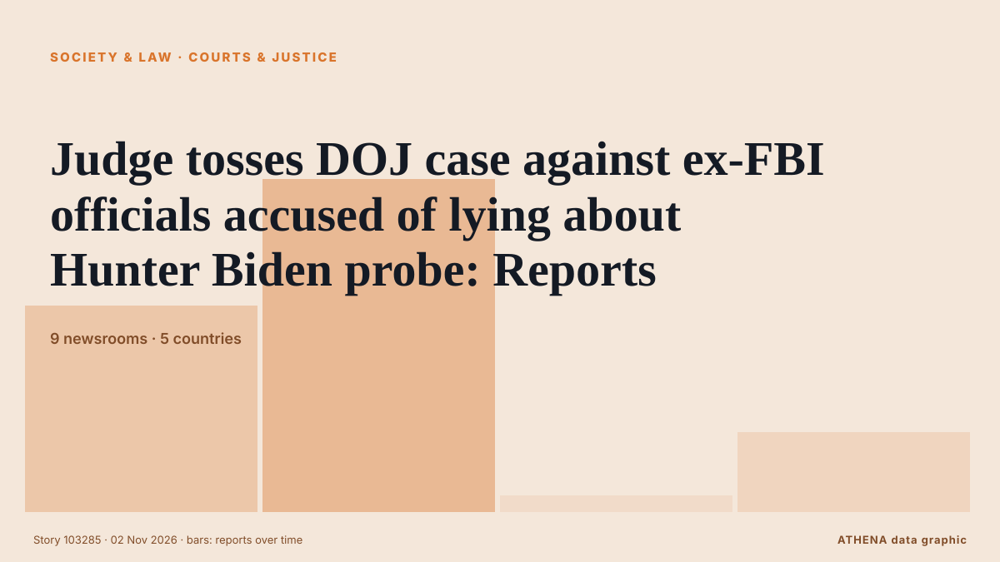

Κοινωνία, Δίκαιο & Δημόσια Πολιτική
ΧορηγούμενοΠαρουσιάζεται από  Cybernetics and Artificial Intelligence Lab Welcome to the Cybernetics and Artificial Intelligence Laboratory, established at the Department of Business Administration of the National
Cybernetics and Artificial Intelligence Lab Welcome to the Cybernetics and Artificial Intelligence Laboratory, established at the Department of Business Administration of the National
Οι τίτλοι των ειδήσεων παρουσιάζονται στα αγγλικά, όπως δημοσιεύτηκαν.

ΔικαιοσύνηJudge tosses DOJ case against ex-FBI officials accused of lying about Hunter Biden probe: Reports
A federal judge on Monday dismissed a criminal complaint against two former FBI officials accused of making false statements to Congress about Hunter Biden, saying the investigation that produced the… από The Canadian Press (via CityNews)
| 20 Οκτ | 45 |
|---|---|
| 21 Οκτ | 115 |
| 22 Οκτ | 222 |
| 23 Οκτ | 188 |
| 24 Οκτ | 120 |
| 25 Οκτ | 131 |
| 26 Οκτ | 318 |
| 27 Οκτ | 310 |
| 28 Οκτ | 291 |
| 29 Οκτ | 261 |
| 30 Οκτ | 298 |
| 31 Οκτ | 146 |
| 1 Νοε | 167 |
| 2 Νοε | 151 |
Rachin Ravindra, Mark Chapman ruled out of New Zealand’s ODI series vs India
Coach Rob Walter says Ravindra is fine to bat, but the risk of diving on his recovering shoulder rules him out of the five-match India series. από Stuff
Russia Officially Withdraws From Europe’s Anti-Torture Convention
Russia ratified the anti-torture treaty in 1998, two years after joining the Council of Europe. από The Moscow Times
German ministers vow tough response to Frankfurt riots and looting
FRANKFURT/PEISSENBERG, Germany, Nov 1 - German ministers threatened tough penalties for looters and rioters who damaged stores and injured more than 100 police officers in Frankfurt overnight, while… από The Straits Times
Brussels sides with Donald Tusk in Poland’s court crisis
The confrontation has attracted a response from France's Marine Le Pen and Slovenia's Janez Janša. από Euractiv
4 Americans and 1 Canadian among the 69 dead in Spain’s train collision
Four Americans and one Canadian were among the 69 people killed in last week's high-speed train collision in Spain, authorities said. από The Canadian Press (via CityNews)
Plaka Explosion: How a Copper Pipe Theft Led to Six Deaths
Security footage has helped investigators reconstruct the movements of three suspects accused of stealing a gas pipe from an Athens building, triggering a leak that led to a devastating explosion… από to vima
French protest violence eases as scattered riots hit Germany
Police expect new demonstrations as schools at the heart of the movement reopen on Monday. από The Irish News (Belfast)
9 killed in fiery Florida jet crash
The Learjet 60 was carrying nine people when it crashed in a residential area in Palm Beach County, federal officials say. από Sydney Morning Herald
Popular Australian children’s author jailed over child exploitation offences
The author of Jasper Jones and Runt pleaded guilty in May after police raided his home months earlier. από BBC News
Police watchdog to open probe over letter about Meghan Markle's father
The Metropolitan Police acknowledged receiving a letter in 2019 regarding accusations about Meghan Markle’s father but did not share this information with other law agencies. από Arab News
Japan calls on U.S. military to strengthen discipline after arrest of another U.S. Marine
The latest arrest took place on Saturday, according to media reports. από CNA (Channel NewsAsia)
Third weekend of protests in France as youth-led rallies sweep Europe
The Interior Ministry told reporters that 70,000 people are estimated to have turned out for the main protest in Paris. από The Irish News (Belfast)
Poland’s PM vows support for tribunal amid court crisis
Riot police have been guarding the court since Friday afternoon, with several hundred protesters gathered to demand the reinstatement of the president of the country’s Constitutional Tribunal. από Sydney Morning Herald
Boy, 14, hands himself in to police after Bradley Lowery used in sickening taunt in Coventry vs Sunderland
Bradley Lowery died aged six from neuroblastoma. από Manchester Evening News
Rioters loot stores in Frankfurt as Gen Z-led protests in Germany turn violent
FRANKFURT/BERLIN: Hooded rioters looted stores in Frankfurt late on Saturday after tens of thousands of demonstrators took to the streets across Germany’s biggest cities to demand better education… από Arab News
Police with assault rifles begin Sydney patrols in wake of Bondi attack
SYDNEY: A new police unit armed with military assault rifles has begun patrolling the streets of Sydney, in an Australian-first measure set up in response to the Bondi Beach attack last December. από Business Recorder
French school blockades to restart from Monday: Student group
France's protest movement against soaring prices emerged from weeks of demonstrations by high school students protesting deteriorating learning conditions and inequality. από CNA (Channel NewsAsia)
New York City Mayor Mamdani secures Trump’s approval for visa for mother of slain Ghanaian teenager in Bronx
The mother of 15-year-old Ghanaian student Javits Frimpong, who was fatally shot while walking to school in New York, will be granted a visa to travel to the United States following an intervention… από MyJoyOnline
Judge dismisses Trump's US$10b lawsuit against Wall Street Journal over Epstein letter
WASHINGTON: A US judge on Saturday dismissed President Donald Trump’s defamation lawsuit against the Wall Street Journal and media magnate Rupert Murdoch over a report that Trump sent a bawdy… από New Straits Times
UK police say 325 people were arrested at Palestine Action demo
British police arrest 139 Palestine Action supporters in London and Edinburgh ahead of a Supreme Court appeal challenging the UK government's ban. από The New Arab
France launches 'attempted murder' probe after petrol bomb attacks on security forces
PARIS: France on Sunday launched an attempted murder probe after petrol bombs were thrown at security forces during Paris protests, as footage of an officer in flames sparked outrage. από New Straits Times
Thousands of volunteers build 108 stupas in a day in Bhutan's Gelephu Mindfulness City
Buddhist masters have gathered in Gelephu, Bhutan, to witness the construction of 108 stupas in a single day. από ABC News (International)
Multiple shootings on Halloween leaves 4 dead, 15 injured
At least 3 victims remain in critical condition following shooting at Fairfield mall, as police search for suspect. από Express Tribune
Portuguese police clash with housing protesters, arrest 13
Riot police clashed with housing protesters in Lisbon and Porto, arresting 13 and injuring several demonstrators. από Arab News
USA Clock Change: Daylight Saving Time Ends November 1
Most of the United States will turn clocks back one hour on Sunday, November 1, restoring the usual winter time difference with Greece after a week in which the gap was one hour smaller. από Greek Reporter
Police probe Jeffrey Epstein’s time spent at Balmoral with Andrew Mountbatten-Windsor
Scottish police are investigating the time convicted sex offender Jeffrey Epstein spent with Andrew Mountbatten-Windsor at Balmoral, a private royal estate in Scotland which is a favored retreat for… από Egypt Independent
Poland's Constitutional Court crisis deepens as judges allege coup attempt
Poland has been plunged into a constitutional confrontation after police entered the Constitutional Tribunal and its president was reportedly suspended from office, prompting allegations of a coup… από AzerNews
France deploys 70,000 police officers to prepare for new wave of protests on Halloween
Emmanuel Macron's government deploys 70,000 police officers as France braces for a third week of intense protests amid over $1 billion in losses. από Fox News (World)
Police clear new Lisbon housing protest camp after thousands rally
LISBON, Nov 1 - Police moved into Lisbon's Rossio Square on Sunday to clear a tent camp erected after thousands marched demanding Portugal's minority centre-right government withdraw a rental bill… από The Straits Times
Polish president calls crisis talks after court standoff
Karol Nawrocki cut short a trip to Senegal and returned to Warsaw. από Euractiv
Spanish village gathers for memorial Mass for train crash victims
Investigators are looking into the cause of one of Europe's deadliest rail disasters this century. από CNA (Channel NewsAsia)
EU’s new levy on parcels kicks in
BRUSSELS, Belgium: The European Union imposed a two-euro (US$2.25) handling fee on packages from outside the 27-nation bloc on Sunday in a bid to curb the influx from China. από New Straits Times
Egypt minibus crash outside Cairo kills 10, injures 24
The accident was the latest in a string of fatal road incidents in Egypt, where traffic accidents remain a persistent public safety challenge. από Free Malaysia Today
Sarkodie mourns Ghanaian teenager shot dead in New York
Ghanaian rapper Michael Owusu Addo, popularly known as Sarkodie, has expressed sorrow over the death of a Ghanaian teenager, Javits, who was reportedly shot in the abdomen while walking near a school… από MyJoyOnline